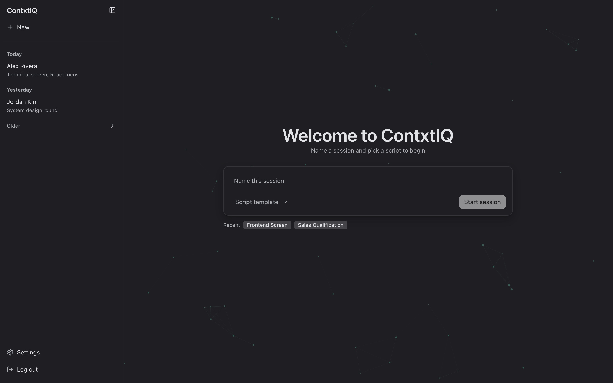
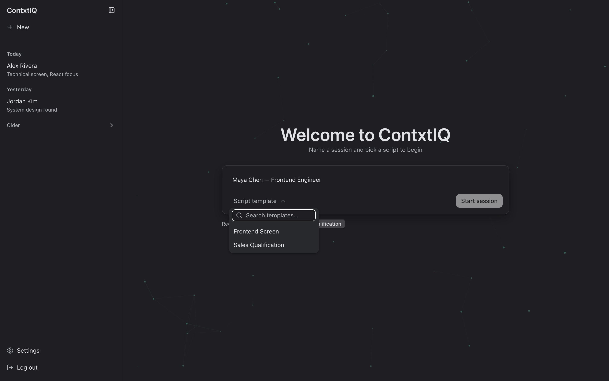
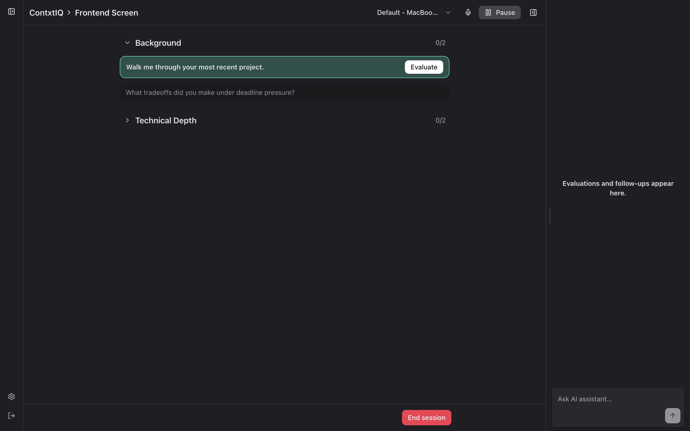
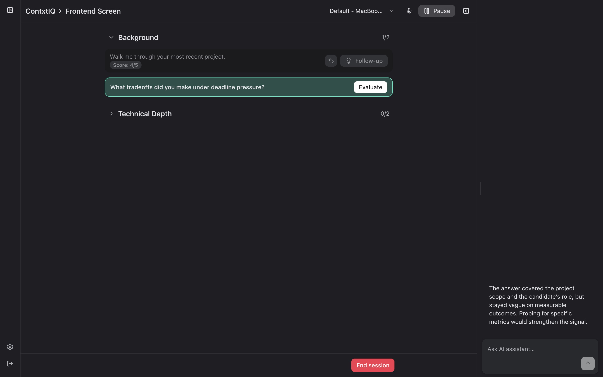

ContxtIQ Screening Copilot
A desktop app that sits beside recruiters during live screens. It grades responses, suggests follow-ups, and answers questions in context as the conversation unfolds.
A venture alongside my work at Intuit.
Role
Co-founder, design and front-end. I built the first prototype in Figma Make and now ship interface changes to the production app with Claude Code.
Problem
Recruiters screen engineers and designers without being able to judge whether a technical answer is right, so skill gaps surface in the final round instead of the screen.
Outcome
In use at a design-partner company: 2 recruiters, 30+ live screening sessions logged.
From a broad idea to a sharp wedge
ContxtIQ started as a question: what would AI support look like if it actually lived inside a live scenario, not after it? The premise was simple: most AI tools summarize after the fact. We wanted to be present during the moment, where decisions are actually made.
That framing was too broad to ship, so we narrowed: script-based roles where there's a known structure to guide, grade, and extend. Recruiting became our first market because the team had felt the pain firsthand. I'd sat through final-round loops with designers who clearly didn't have the skills they'd claimed; the same story played out with engineers and sales hires. The signal from a screening call wasn't surviving into the interview.
Technical screens, non-technical screeners
Screens exist to catch skill gaps before the loop. But the person screening an engineer or designer is usually a recruiter. They can hear a technical answer without being able to tell whether it's any good. The usual workaround is putting a technical person on the call.
-
Can't grade the answer
A recruiter can tell whether a candidate sounded confident, not whether the answer was technically right. The rubric lists topics, not what a strong answer sounds like.
-
Missed follow-ups
Knowing what to probe takes domain knowledge. Without it, a vague answer goes unchallenged and claimed experience goes untested.
-
Context stays in the recruiter's head
Hiring managers downstream inherit a short summary instead of evidence. Weak signal surfaces as a surprise in round 3.
A copilot that stays in the call with you
ContxtIQ is a desktop app that runs alongside the screening call. The recruiter picks a script template, starts a session, and works through questions one at a time. Behind the scenes, live transcription feeds a reasoning loop that grades answers, suggests follow-ups, and stays open for ad-hoc questions, all scoped to the candidate in front of you.
-
Live response grading
Each answer scored against the script rubric in real time. Reasoning shows in the right rail so the recruiter can see why, not just the number.
-
Generated follow-ups
After marking a question complete, ContxtIQ proposes the probing question a technical interviewer would ask, grounded in what was just said.
-
In-context assistant
"Ask AI assistant" stays open throughout. It's scoped to the candidate, the script, and the session, so every answer arrives with the right context already loaded.
Start a session, work the script, close the loop
The whole product bends around the screening hour. Open the app, pick a template, and run the call. Reasoning and follow-ups assemble themselves as you go.




Prototype to production, in one hand-off loop
I ran this end to end, from a prototype in Figma Make to pull requests in the production repo. The build stayed tight because each stage handed the living prototype forward instead of writing it down on paper.
-
Step 1 · Design
Figma Make prototype
I built the first prototype in Figma Make to prove the session → question → grading loop felt right before anyone committed code.
-
Step 2 · PD
First working stab
Product Development took the prototype and stood up a real desktop application, the first stab at the app that could actually run a session.
-
Step 3 · Design
Claude Code on the real repo
Once Claude Code landed, I started building directly against the production repo, pushing PRs to refine interactions, copy, and the grading UI myself instead of handing off specs.
-
Step 4 · Team
Live design partner
We moved from internal builds to a design partner running real screens. Sessions are being logged live, and the loop we sketched in Figma Make is now producing evidence.
- 30+Live sessions logged
- 2Recruiters live on product
- 1Design-partner company
Why it matters
You shouldn't need a technical person to screen for technical skills. With ContxtIQ, any recruiter can.
Sharpen the wedge, then widen it
Near-term: deepen the recruiting experience with the design partner, tighten the grading reasoning, and turn session artifacts into something a hiring manager can actually pick up. Further out: the same live-copilot pattern extends to any script-based role with a structured conversation and a signal worth preserving, like sales discovery, support triage, or clinical intake.